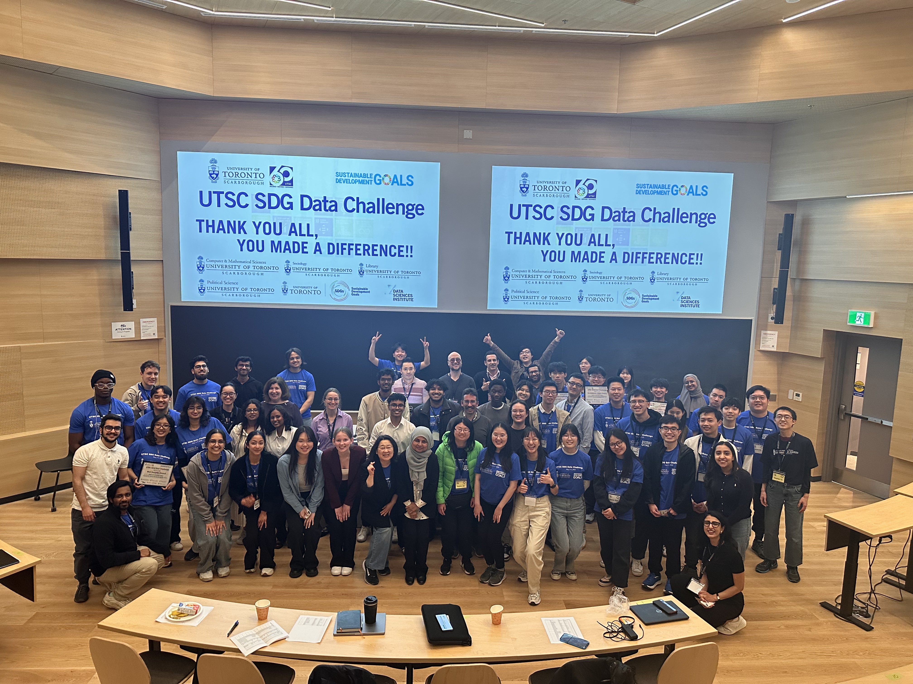
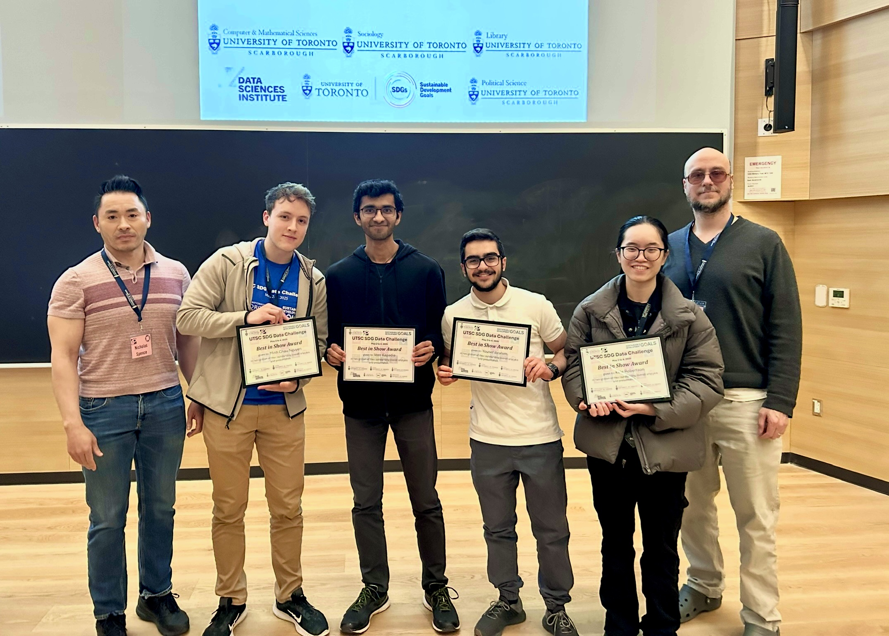
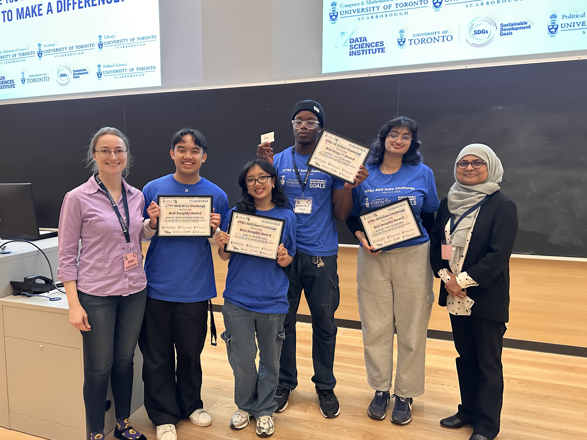
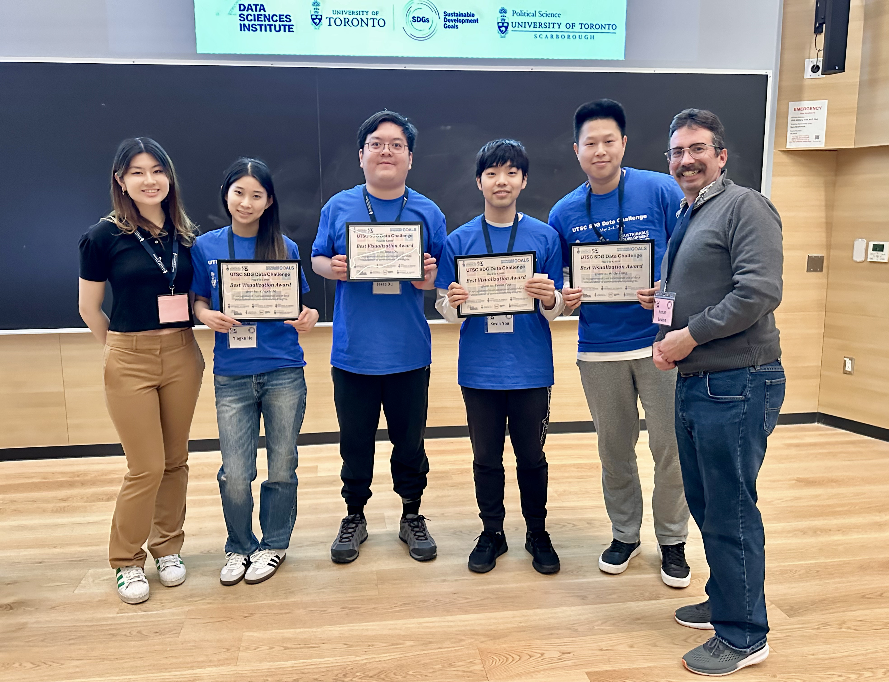
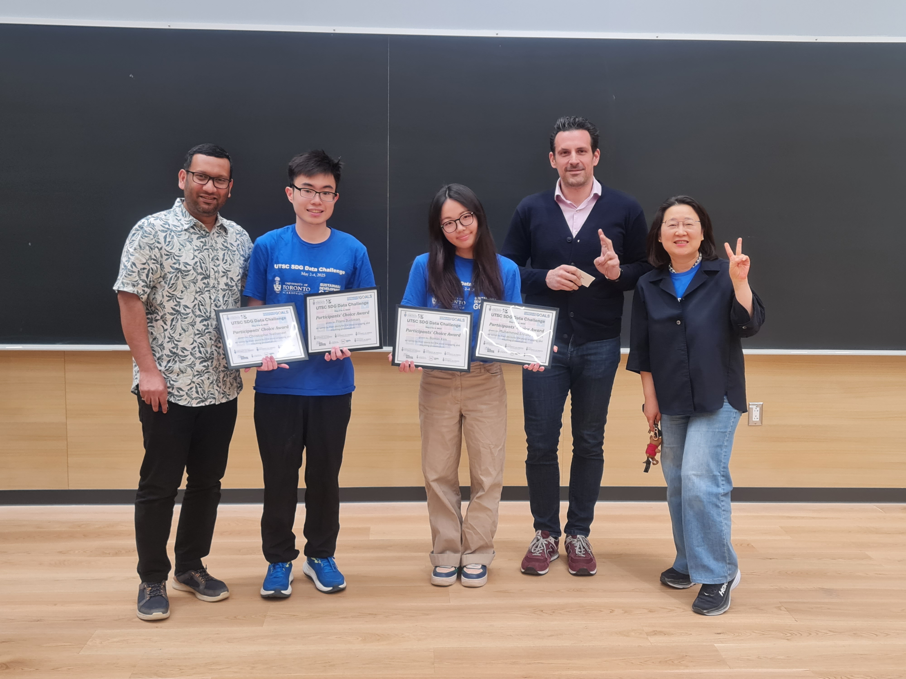
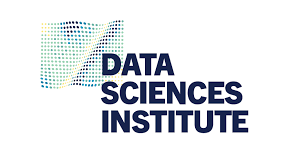
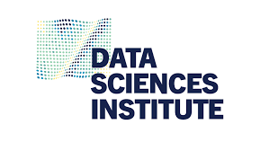

IntroductionThe UTSC SDG Data Challenge brought together 16 interdisciplinary teams, comprising 57 students from across the University of Toronto's three campuses: St. George, Mississauga, and Scarborough. Each team was intentionally composed of students from different academic years and disciplines. While half of the participants were enrolled in Statistics and Data Science, the other half represented a wide range of fields, including Computer Science, Life Sciences, and Political Science. Throughout the challenge, students analyzed data related to the United Nations Sustainable Development Goals (SDGs). The initiative aimed to enhance their data analytics skills while empowering them to craft informed, evidence-based arguments addressing global challenges. Participants explored SDG progress since 2015, identified gaps in achieving the 2030 targets, and told compelling stories through data analysis and visualization. The organizers emphasized that the diversity of participants was instrumental in fostering comprehensive and innovative approaches to analyzing SDG progress—a central goal of the competition. The event highlighted the importance of sustainability and a just future, as students from diverse academic backgrounds collaborated to address global challenges. Participants had the flexibility to define their own research questions, focusing on any of the 17 SDGs or their combinations at global or national levels, and were encouraged to incorporate external data to provide a more nuanced context for their analyses

Mentors, Judges, and VolunteeersThe challenge included mentorship from experts who provided valuable guidance and support to the teams. We had ten dedicated mentors—mostly graduate students—who played a key role throughout the event. The mentors were:
The panel of judges who assessed the students’ final presentations represented a diverse range of expertise. The judges were:
This event would not have been possible without the time, effort, and dedication of our outstanding volunteers. We are especially grateful to the following nine individuals for their invaluable support:
Award WinnersAfter two days of intensive work, we are thrilled to announce the award-winning teams and their members: Best in Show ($300 -1st Prize)Sustainable Solutions SquadYousef Ibrahim, Veer Kapadia, Kole Robertson, and Min Chau Nguyen Project Title"An Analysis of GDP and GHG Emissions"

Best Insight ($200)SphericalJoshua Antonio Crisologo, Karissa Cruz, Aaron Fossi Mbah, and Sasha Kodytuakku Project Title"Sudan Under Strain: Setbacks in Child Health Outcomes"

Best Visualization ($200)RaccoonsAndy Feng, Yingke He, Jesse Xu, and Kevin You Project Title"An Analysis of GDP and GHG Emissions"

Participants Choice AwardKecap ManisMuhammad Enrizky Brillian, Frans Budiman, Bomin Kim, and Christopher Nathanael Project Title"How to Decrease Indonesia’s 2030 Tobacco Consumption Rate While Sustaining Its Economic Growth?"

SponsorsWe gratefully acknowledge the generous support of the following sponsors, whose contributions made this event possible:
|
Footer

 
